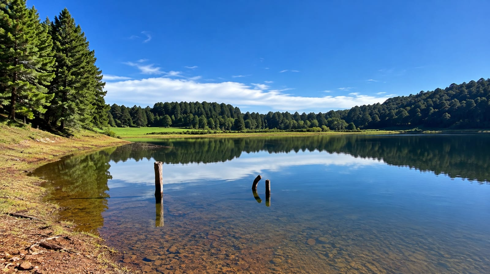
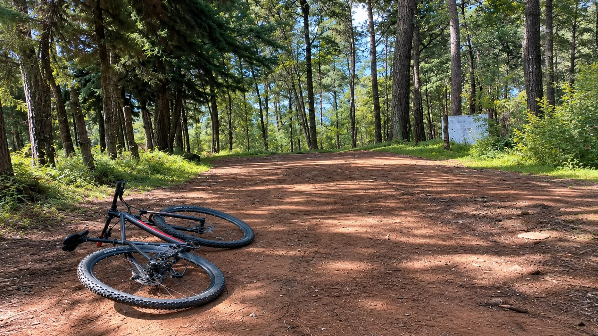
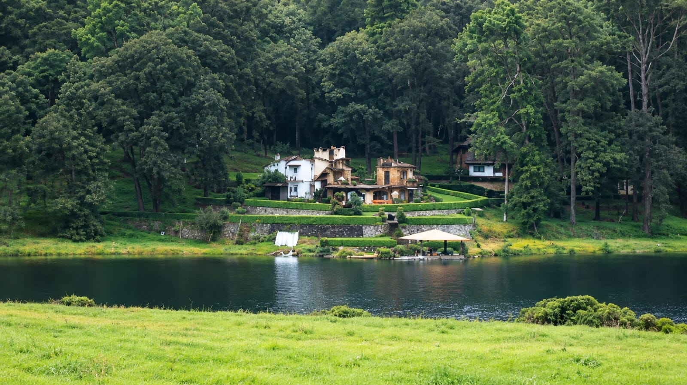

"La Laguna Negra es un espacio natural que destaca por su paisaje, tranquilidad y entorno boscoso. Es uno de los elementos naturales relacionados con las actividades ecoturísticas de la zona. "
"Este lugar es atractivo para quienes disfrutan de la historia, la arquitectura y las tradiciones."

"Existen algunas rutas ecoturísticas (como el camino Avandaro - Pinal de Marqusado) y un mirador desde el cual se alcanza a apreciar el area de Valle de Bravo y la comunidad de Colorines."
"Por esta razon, suele asociarce de manera informal a la region turistica de Valle de Bravo."

"El Camino a Pinal del Marquesado (tambien conocido como la ruta Avandaro - Pinal del Marquesado) es una de las vias ecoturísticas y de aventura mas famosas de la region."
"Conecta la zona boscosa de Avandaro con la comunida de Pinal."